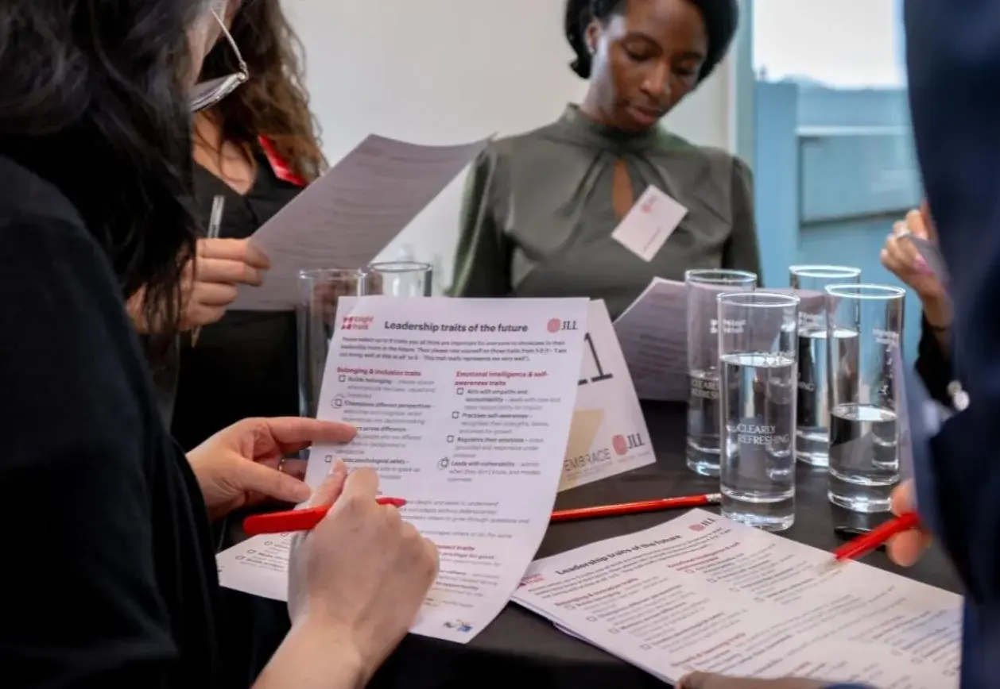

Stronger leadership & decisions
- More leadership agility through complex change
- Clear alignment between vision and execution
Misaligned culture costs time, slows decisions and quietly charges you in rework, turnover and disengagement. We find the real barriers to performance, clarify expectations and embed the behaviours that make execution, resilience and accountable leadership the norm.

Trusted by organisations where culture drives performance


What you can expect
After team or organisational culture work, clients typically see measurable improvement in six areas.
Culture solutions tailored to you
Co-create an inclusive, high-performing workplace where people feel seen, valued and able to do their best work. Pick the depth that matches where you are.
A baseline read of your culture before you make strategic changes.
For organisations ready to act and embed lasting change.
Ongoing support through significant change.
Need an initial culture check?
→ Culture Foundations Audit
Ready to take action?
→ Culture Reset & Strategy
Need support through transformation?
→ Transformation Partnership

Client testimonial · Sony Music
“Her unique, colourful approach gave us the tools to address our challenges and set a path to success. Thanks to this, we’ve developed into a high-performing team.”Digital Team Director, Sony Music
from ‘storming’ to consistently ‘performing’
negative culture mentions, down from 75%
How we help
Unlike standard culture assessments that offer generic insight, our review is co-created with your leadership and HR teams. We don’t just identify gaps. We design solutions that are realistic, measurable and directly linked to business outcomes.
Ideal for CEOs, HR leaders and senior executives who want to align culture with strategy, improve employee experience and make sure policies and processes drive engagement, equity and long-term success.
What we deliver
It assesses how well your culture aligns with your mission, values and business goals, and identifies gaps in leadership behaviours, HR policies and employee experience that hold back performance, engagement or inclusion. If you see high turnover, low engagement or stalled transformation, it lets you act proactively and strategically.
It depends on size and complexity, but a standard review typically takes 6 to 12 weeks, including data collection, analysis, stakeholder engagement and presenting insights with actionable recommendations.
We partner closely with HR, senior leadership and key stakeholders across the organisation, so the review captures diverse perspectives and leads to changes owned by the whole organisation, not just HR.
It goes deeper and is systemic. It examines how culture is embedded in leadership, decision-making and policy; the gaps between stated values and lived experience; the root causes of engagement or retention challenges; and practical, organisation-wide strategies for alignment.
Fill in our short enquiry form so we understand your needs and priorities. We then arrange a call to explore your culture challenges and business objectives, and design a tailored approach from there.
Let’s be intentional
Tell us what is going on. We’ll come to the first conversation with questions worth answering.